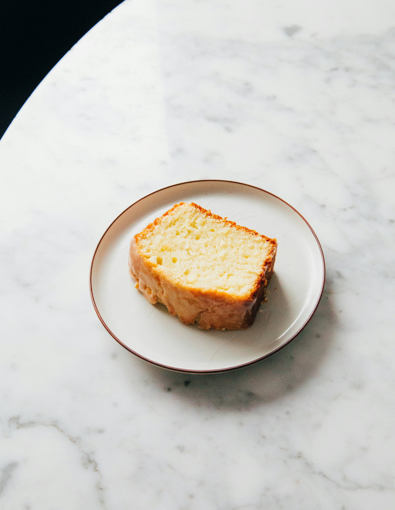

Gooey Butter Cake

Photo by Charles Deluvio on Unsplash
Ingredients
Top Layer
- 8 oz cream cheese, softened
- 2 eggs
- 2 cups powdered sugar
- 1/2 cup browned butter (1 stick)
- 1 tsp vanilla extract
- pinch of salt
Bottom Layer
- 1 cup all-purpose flour
- 1/4 cup granulated sugar
- 1/2 cup browned butter (1 stick)
- 1 eggs
- 1/2 tsp vanilla extract
Instructions
- Brown the butter
- Melt 2 sticks of butter over medium heat
- Continue cooking until it smells nutty and the milk solids turn golden brown
- Remove from heat and let cool for about 10 minutes
- Make the bottom layer
- Mix together flour and granulated sugar
- Stir in 1/2 cup browned butter, egg and vanilla
- Mix until a soft dough forms.
- Press evenly into a greased 8x8 or 9x9 pan
- Make gooey layer
- Beat together softened cream cheese and eggs
- The mix in remaining 1/2 cup brown butter, vanilla and a pinch of salt
- Gradually mix in powdered sugar until smooth
- Bake
- Pour the topping over the crust
- Bake for 35-40 minutes
- Cool
- Let it cool for about 1 hour
- If you want a firmer texture, let it chill overnight
- Add powdered sugar on top for added goodness
Home